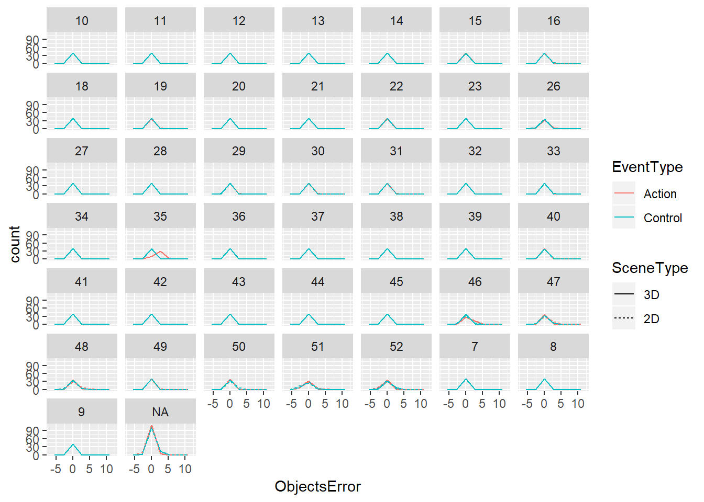
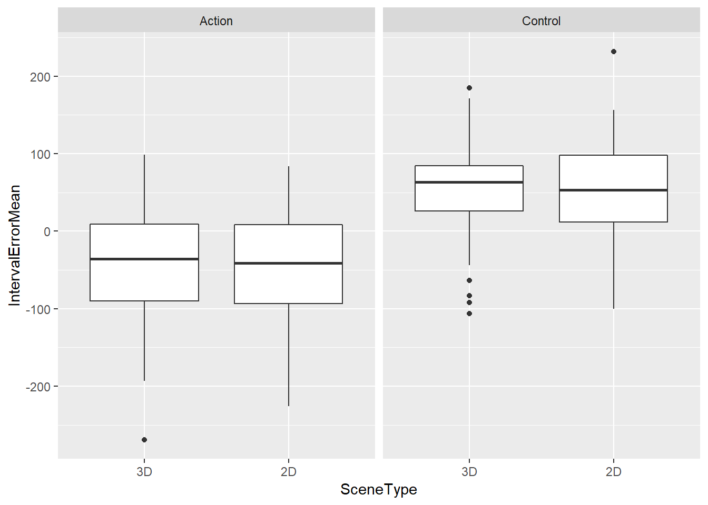

BildAktVR data analysis 1
Ondrej Havlicek
ohavlicek@gmail.com 11/2017
Preparations
Exploratory analysis
Explore a bit scenes distribution and randomization
Number of objects inside a scene is not orthogonal to time interval: some combinations appear often, some less often. We will have to revise the VR code.
Objects error exploration
Distributions of object estimation errors (error = estimated - actual) for each participant:

People are mostly correct about the object count.

Numbers of objects are being underestimated in 2D scenes: This could be a confound for interpretation of any interval estimation effect - 3D and 2D scenes differ in object counting task difficulty. Should we reduce overlap of objects in the scenes?
Precision is also better for 3D than for 2D scenes

There is also a difference in correlation between actual and estimated number of objects, but very tiny.
Objects mixed-effects model
ObjectsError ~ Objects + SceneType*EventType + (1+Objects + SceneType + EventType|Subject)
| Objects Error | |||
|---|---|---|---|
| Predictors | Estimates | CI | p |
| (Intercept) | 0.25 | 0.12 – 0.39 | 0.001 |
| Objects | -0.02 | -0.03 – -0.00 | 0.017 |
| SceneType2D | -0.05 | -0.10 – -0.00 | 0.053 |
| EventTypeControl | -0.04 | -0.11 – 0.04 | 0.320 |
| SceneType2D:EventTypeControl | 0.00 | -0.05 – 0.05 | 0.919 |
| Random Effects | |||
| σ2 | 0.26 | ||
| τ00 Subject | 0.18 | ||
| τ11 Subject.Objects | 0.00 | ||
| τ11 Subject.SceneType2D | 0.01 | ||
| τ11 Subject.EventTypeControl | 0.05 | ||
| ρ01 Subject.Objects | -0.73 | ||
| ρ01 Subject.SceneType2D | -0.72 | ||
| ρ01 Subject.EventTypeControl | -0.54 | ||
| ICC Subject | 0.40 | ||
| Observations | 6880 | ||
| Marginal R2 / Conditional R2 | 0.008 / 0.196 | ||
| Objects Error | |||
|---|---|---|---|
| Predictors | Estimates | CI | p |
| (Intercept) | 0.25 | 0.12 – 0.39 | 0.001 |
| Objects | -0.02 | -0.03 – -0.00 | 0.017 |
| SceneType2D | -0.05 | -0.10 – -0.00 | 0.053 |
| EventTypeControl | -0.04 | -0.11 – 0.04 | 0.320 |
| SceneType2D:EventTypeControl | 0.00 | -0.05 – 0.05 | 0.919 |
| Random Effects | |||
| σ2 | 0.26 | ||
| τ00 Subject | 0.18 | ||
| τ11 Subject.Objects | 0.00 | ||
| τ11 Subject.SceneType2D | 0.01 | ||
| τ11 Subject.EventTypeControl | 0.05 | ||
| ρ01 Subject.Objects | -0.73 | ||
| ρ01 Subject.SceneType2D | -0.72 | ||
| ρ01 Subject.EventTypeControl | -0.54 | ||
| ICC Subject | 0.40 | ||
| Observations | 6880 | ||
| Marginal R2 / Conditional R2 | 0.008 / 0.196 | ||
The error in object count is not (sig.) influenced by number of objects in the scene, but is influenced by the scene type (2D = more underestimation of the count)
Intervals error exploration
Interval estimation errors (Estimated - Actual) are pretty much normally distributed with pretty much similar variance across subjects and conditions

Intervals are judged more accurately in Action (Press-Beep) than in Control (Vibration-Beep) conditions
Interval estimates seem to be more precise (less variable) in the 3D condition.

Correlation between actual and estimated intervals seems to be a bit better in the 3D condition.
Intervals models
- Model 1: IntervalError ~ scale(Interval) + SceneType * EventType + (1+scale(Interval) + SceneType + EventType|Subject)
- Model 2: IntervalError ~ scale(Interval) + abs(ObjectsError) + SceneType * EventType + (1+SceneType + EventType|Subject)
| Interval Error | Interval Error | |||||
|---|---|---|---|---|---|---|
| Predictors | Estimates | CI | p | Estimates | CI | p |
| (Intercept) | -44.49 | -67.05 – -21.92 | <0.001 | -45.62 | -68.22 – -23.03 | <0.001 |
| scale(Interval) | -70.42 | -81.92 – -58.92 | <0.001 | -70.48 | -81.98 – -58.99 | <0.001 |
| SceneType2D | -3.92 | -16.17 – 8.32 | 0.532 | -4.02 | -16.25 – 8.22 | 0.522 |
| EventTypeControl | 96.74 | 76.40 – 117.08 | <0.001 | 96.98 | 76.64 – 117.31 | <0.001 |
| SceneType2D:EventTypeControl | 2.97 | -9.98 – 15.92 | 0.653 | 2.81 | -10.14 – 15.76 | 0.671 |
| abs(Objects Error) | 5.25 | -2.05 – 12.56 | 0.159 | |||
| Random Effects | ||||||
| σ2 | 18764.69 | 18762.90 | ||||
| τ00 | 5232.08 Subject | 5217.31 Subject | ||||
| τ11 | 1363.35 Subject.scale(Interval) | 1361.30 Subject.scale(Interval) | ||||
| 740.35 Subject.SceneType2D | 738.17 Subject.SceneType2D | |||||
| 3692.13 Subject.EventTypeControl | 3689.48 Subject.EventTypeControl | |||||
| ρ01 | 0.35 Subject.scale(Interval) | 0.35 Subject.scale(Interval) | ||||
| -0.19 Subject.SceneType2D | -0.17 Subject.SceneType2D | |||||
| -0.58 Subject.EventTypeControl | -0.58 Subject.EventTypeControl | |||||
| ICC | 0.22 Subject | 0.22 Subject | ||||
| Observations | 6880 | 6880 | ||||
| Marginal R2 / Conditional R2 | 0.231 / 0.412 | 0.231 / 0.412 | ||||
| Interval Error | Interval Error | |||||
|---|---|---|---|---|---|---|
| Predictors | Estimates | CI | p | Estimates | CI | p |
| (Intercept) | -44.49 | -67.05 – -21.92 | <0.001 | 170.37 | 83.63 – 257.10 | <0.001 |
| Interval S | -70.42 | -81.92 – -58.92 | <0.001 | -71.41 | -82.80 – -60.01 | <0.001 |
| SceneType2D | -3.92 | -16.17 – 8.32 | 0.530 | -4.06 | -16.26 – 8.14 | 0.515 |
| EventTypeControl | 96.74 | 76.40 – 117.08 | <0.001 | 97.41 | 73.41 – 121.42 | <0.001 |
| SceneType2D:EventTypeControl | 2.97 | -9.98 – 15.92 | 0.653 | 2.27 | -10.60 – 15.14 | 0.730 |
| abs(Objects Error) | 4.98 | -2.34 – 12.30 | 0.182 | |||
| Objects Count | 1.18 | -1.86 – 4.21 | 0.448 | |||
| Objects RT | -0.00 | -0.01 – 0.00 | 0.304 | |||
| Interval Log RT | -28.55 | -37.76 – -19.35 | <0.001 | |||
| Trial Total | 0.24 | 0.10 – 0.37 | 0.001 | |||
| ObjectsCount:ObjectsRT | 0.00 | -0.00 – 0.00 | 0.791 | |||
| Random Effects | ||||||
| σ2 | 18764.69 | 18532.80 | ||||
| τ00 | 5232.09 Subject | 6799.98 Subject | ||||
| τ11 | 1363.35 Subject.IntervalS | 1336.50 Subject.IntervalS | ||||
| 740.35 Subject.SceneType2D | 739.77 Subject.SceneType2D | |||||
| 3692.13 Subject.EventTypeControl | 5512.86 Subject.EventTypeControl | |||||
| ρ01 | 0.35 Subject.IntervalS | 0.29 Subject.IntervalS | ||||
| -0.19 Subject.SceneType2D | -0.28 Subject.SceneType2D | |||||
| -0.58 Subject.EventTypeControl | -0.69 Subject.EventTypeControl | |||||
| ICC | 0.22 Subject | 0.27 Subject | ||||
| Observations | 6880 | 6880 | ||||
| Marginal R2 / Conditional R2 | 0.231 / 0.412 | 0.241 / 0.435 | ||||
- Intervals are more underestimated for longer (actual) intervals.
- There is no effect of scene type - we hypothesise that intervals will be underestimated more in 3D than in 2D..
- The intervals may be overestimated a bit more in the Control than in Action condition - consistent with agency hypothesis, but it may be driven by factually different intervals in action than in control due to the VR SW and HW.. So we should probably rather look for an interaction:
- There is a n.s. hint at interaction between Scene type (2D/3D) and Event type (Action/Control), which is what we want - but we want there to be probably a bigger underestimation in 3D than 2D, in the Action than in the Control condition, right?
- Model which includes also error in objects estimation (measure of difficulty of the counting task, in absolute numbers) shows no interesting difference. (The bigger significance of Interval is due to its exclusion from random effects = potentially higher false positive rate)
Intervals RT exploration
RTs are around 3-7 seconds, there is a pretty long tail, but log-transformed seems ok-ish, maybe no need to remove outliers..

Interval RTs seem to be faster for 2D than for 3D in Action condition
Not sure whether this means something, let’s wait for more data..
Interval RT mixed-effects model
- IntervalLogRT ~ Objects + Interval + SceneType * EventType + (1+SceneType + EventType|Subject)
| Interval Log RT | |||
|---|---|---|---|
| Predictors | Estimates | CI | p |
| (Intercept) | 8.33362 | 8.22306 – 8.44418 | <0.001 |
| Objects | -0.00184 | -0.00516 – 0.00148 | 0.277 |
| Interval | 0.00012 | 0.00009 – 0.00015 | <0.001 |
| SceneType2D | -0.00190 | -0.03146 – 0.02766 | 0.900 |
| EventTypeControl | 0.05447 | -0.01265 – 0.12159 | 0.118 |
| SceneType2D:EventTypeControl | -0.01681 | -0.04713 – 0.01351 | 0.277 |
| Random Effects | |||
| σ2 | 0.10 | ||
| τ00 Subject | 0.12 | ||
| τ11 Subject.SceneType2D | 0.00 | ||
| τ11 Subject.EventTypeControl | 0.05 | ||
| ρ01 Subject.SceneType2D | -0.23 | ||
| ρ01 Subject.EventTypeControl | -0.39 | ||
| ICC Subject | 0.54 | ||
| Observations | 6880 | ||
| Marginal R2 / Conditional R2 | 0.006 / 0.533 | ||
| Interval Log RT | |||
|---|---|---|---|
| Predictors | Estimates | CI | p |
| (Intercept) | 8.33598 | 8.21394 – 8.45801 | <0.001 |
| Objects Count | -0.00250 | -0.00615 – 0.00115 | 0.180 |
| Interval | -0.00015 | -0.00018 – -0.00011 | <0.001 |
| SceneType2D | -0.00143 | -0.03419 – 0.03133 | 0.932 |
| EventTypeControl | 0.06199 | -0.01309 – 0.13706 | 0.112 |
| SceneType2D:EventTypeControl | -0.02013 | -0.05350 – 0.01324 | 0.237 |
| Random Effects | |||
| σ2 | 0.12 | ||
| τ00 Subject | 0.15 | ||
| τ11 Subject.SceneType2D | 0.01 | ||
| τ11 Subject.EventTypeControl | 0.06 | ||
| ρ01 Subject.SceneType2D | -0.22 | ||
| ρ01 Subject.EventTypeControl | -0.40 | ||
| ICC Subject | 0.55 | ||
| Observations | 6880 | ||
| Marginal R2 / Conditional R2 | 0.007 / 0.534 | ||